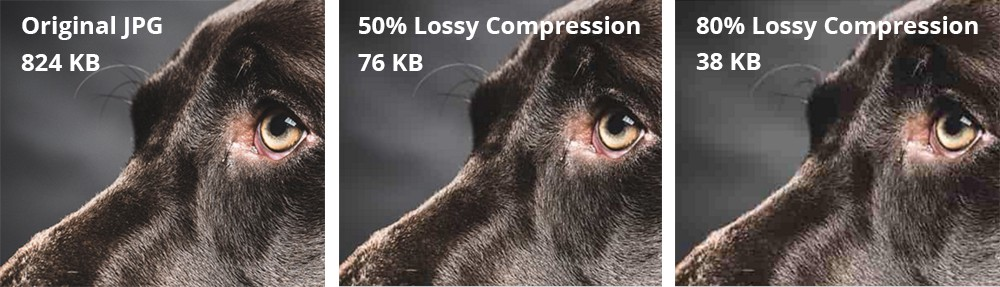
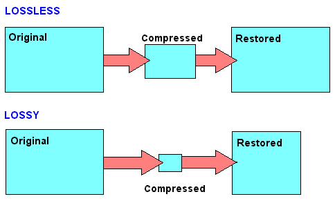
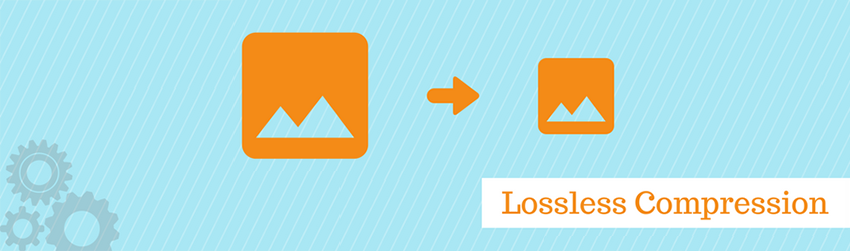

Compressie
Zoals eerder is benoemd, slaat een computer informatie op in een harde schijf. De gegevens daarin, dat kunnen bijvoorbeeld geluidsfragmenten zijn en afbeeldingen, kunnen veel details bevatten, maar die nemen wel erg veel ruimte in beslag. Dat zorgt ervoor dat de harde schijf sneller vol zit en dat het uploaden van bestanden veel langer duurt omdat hier meer data uit de databundel voor nodig is. Om dat probleem op te lossen, wordt gebruikgemaakt van bestandscompressie, om zo de bestandsgrootte te verkleinen, waardoor er meer opslagruimte is en de uploadtijd sneller is. Er zijn 2 typen compressies die hieronder worden uitgelegd.
Lossy compression
Je zal soms merken dat afbeeldingen die je uploadt er best wazig uitzien. Dat is het gevolg van lossy compression waarbij gegevens permanent worden verwijderd om de bestandsgrootte te verkleinen. Vaak worden kleine details verwijderd, maar wel op zo’n manier dat het kwaliteitsverlies acceptabel is, dus deze manier van compressie wordt vaak toegepast bij media zoals audio en video. Een voorbeeld van het gebruik van lossy compression voor afbeeldingen is bijvoorbeeld minder verschillende kleurtinten te tonen waardoor de bestandsruimte al drastisch afneemt. Op je telefoon wordt lossy compression vanzelf toegepast bij foto’s, wat je kan zien aan de jpg aan het eind van de naam van het bestand.

MP3

De meest bekende manier dat lossy compressie wordt toegepast, is MP3. Deze methode wordt gebruikt om de bestandsgrootte van muziek te verkleinen, omdat die al snel hoog kan oplopen. Er wordt gekeken naar audio-informatie die voor het menselijk oor niet al te belangrijk is. Geluiden die niet of nauwelijks hoorbaar zijn, zoals een hele hoge toon, worden verwijderd. Dit is vaak hoger dan 16 kHz, omdat het menselijk gehoor toch maar tot ongeveer 20 kHz hoort. Vaak is de muziek die wordt verwijderd achtergrondmuziek, of is er al genoeg geluid, waardoor de afwezigheid van die ene hoge noot niet meer uitmaakt. In computertaal betekent dit dat om nog enige kwaliteit van de muziek te behouden, er wordt gekeken naar de sample rate. Die geeft aan hoeveel keer je in 1 seconde je geluid vastlegt. Die moet minimaal 44,1 HZ zijn, omdat zo iedereen voldoende hoorbare geluiden kan waarnemen. Ook moet je weten met hoeveel bits de sample rate is opgeslagen, want als je die 2 met elkaar vermenigvuldigt, krijg je de bitrate van de muziek. Als je die verlaagt naar 256 of zelfs 128 kbps, dan hoort het menselijk oor geen verschil in muziektoon. Op die manier is wel de ruimte die het bestand inneemt verlaagd en kan je veel meer muziek opslaan zonder de opslagruimte vol te stoppen of voor langere tijd te streamen.
Lossless compression
Het tegenovergestelde effect gebeurt bij lossless compression. Als je van deze soort compressie gebruikmaakt, wordt er niks aan de originele kwaliteit aangepast. Er wordt dus geen informatie verwijderd of iets anders gedaan aan de gegevens, waardoor alles intact blijft en je altijd het originele bestand kan herstellen. Wat wel wordt gedaan is dat zorgvuldig wordt gezocht naar herhaling van data. Als er dus meerdere keren dezelfde code staat, dan wordt dit op een slimme manier verkort naar 1 stuk code. Zo wordt het bestand zelf dus kleiner, zonder voor verlies te zorgen. De bestanden die hieruit ‘ontstaan’ zijn bijna altijd groter dan die van lossy compression, maar zo blijft de kwaliteit wel hoog. Dat is belangrijk voor bestanden waarbij nauwkeurigheid cruciaal is.
